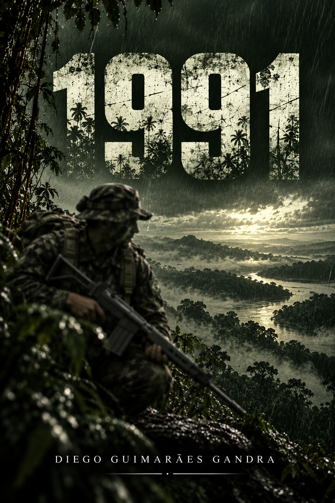

EM PRODUÇÃO
FICÇÃO HISTÓRICA
1991
Antes do Traíra
Uma narrativa ambientada na Amazônia brasileira, inspirada no contexto da Operação Traíra e na experiência de militares que serviram na região de fronteira.
Previsão de lançamento: 2027.
SOBRE A OBRA
Conheça o projeto editorial.
Entre a formação militar, a vida na selva e os vínculos construídos entre companheiros, 1991 acompanha personagens ficcionais em meio a acontecimentos inspirados na história brasileira.
A obra procura dar espaço à dimensão humana da vida militar, à amizade, à memória e às consequências dos conflitos, sem confundir ficção com registro documental.
O livro está em produção, com lançamento previsto para 2027.
MATERIAIS DE REFERÊNCIA
Além das páginas.
Vídeo utilizado como material de referência durante a elaboração de 1991.